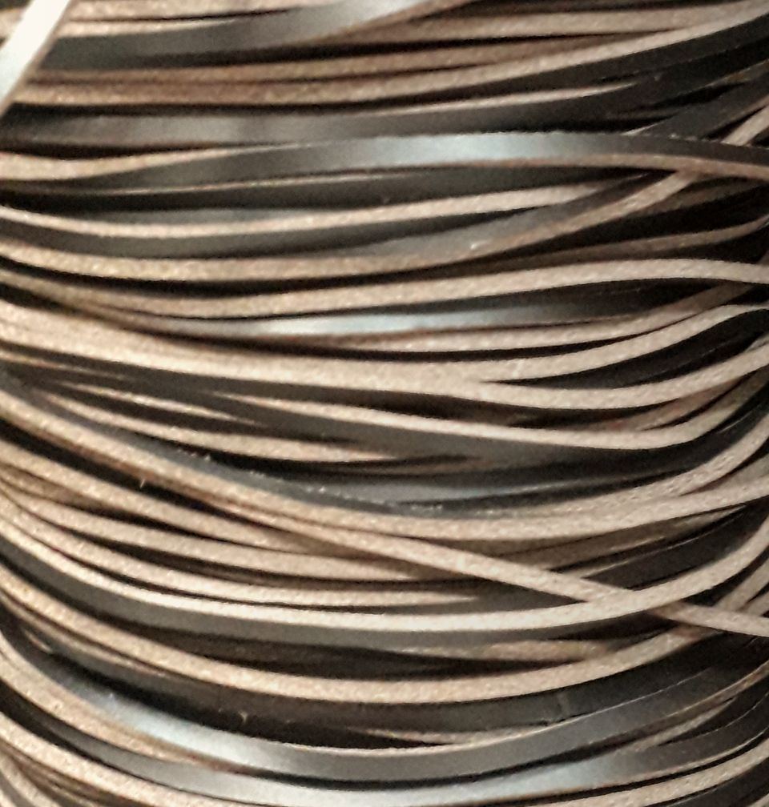
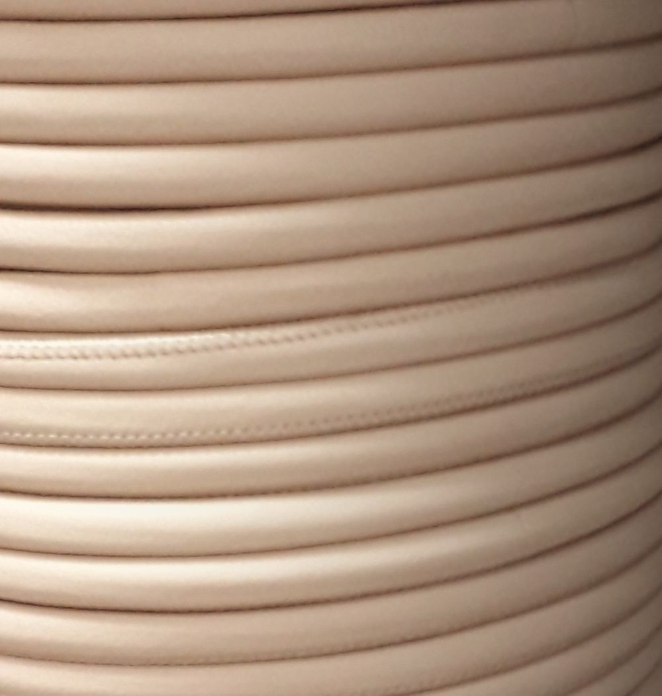

Fibbie, lacci e rinforzi
Minuteria in zama, ferro e ottone, lacci in pelle da mm2 a mm60, nastri, fodere e rinforzi per borse, cinture, calzature e capi. Da Vigonovo, Venezia.
Scala 1:1Righello in millimetri. In cuoio le misure a catalogo: lacci e tondini da 2 a 16, strisce fino a 60, nastri da 20 a 50, fibbie da ricoprire 40, 50 e 60.
Tav. 1Fibbia ad ardiglione e borchie, finitura oro. Foto provvisoria, in attesa dello still life Hambro.
Lacci e nastri in scala 1:1
Scegli il materiale e la misura: la striscia qui sotto prende la larghezza vera. Il laccio in pelle lo facciamo tubolare, piatto, cucito o a taglio vivo, e su richiesta anche a campione.
mm30
Striscia in pelle a taglio vivo, da mm2 a mm60
Nastri in cotone e poliestere per tracolle e cinture: mm20, 25, 30, 40 e 50.
La misura non torna? Tara lo schermo
Minuteria metallica
Undici famiglie dal cassetto, in zama, ferro e ottone. Su ordinazione si possono avere varie finiture; qui c'è solo una parte di quello che è disponibile.

Moschettoni anello tondo
Zama
02
Moschettoni anello ovale
Zama, ferro, ottone
03
Moschettoni anello rettangolare
Zama
04
Mezzi anelli
Ferro, zama
05
Anelli tondi e rettangolari
Varie forme e materiali
06
Fibbie doppie
Anche per calzature
07
Attacchi con spinetta
Zama
08
Attacchi con alette
Zama
09
Chiusure a pulsante
Zama
10
Chiusure a girello
Zama
11
Chiusure a battente
Zama
Fuori dal cassetto
- Cerniere dorate o nichelate
- Scheletri, salpe e rinforzi per borse
- Fodere tinta unita e stampate
- Nappe e vitelli lavabili, sp. 0,7 e 1,1
- Accessori in legno, bambù, nichel free, con strass


Ricoperte con il vostro materiale
Fibbie e bottoni rivestiti in pelle o in tessuto, anche con quello che ci mandate.


Nel laboratorio ricopriamo fibbie e bottoni con il tessuto o la pelle che ci mandate. Sulla pelle facciamo anche lavorazioni particolari, dal camouflage al floreale alla stampa cocco.
- Fibbie da ricoprire
- mm40, mm50, mm60
- Bottoni
- Yvette, a pressione e altri da ricoprire
- Rivestimento
- tessuto o pelle, anche vostri
- Lavorazioni sulla pelle
- camouflage, floreale, stampa cocco
Semilavorati in pelle e tessuto
Il laboratorio attrezzato realizza componenti semilavorati in pelle e tessuto. Se un articolo non c'è, il personale lo crea su richiesta del cliente.

Per chi fa borse, scarpe e capi
Pelletteria
- Nastri per tracollamm20 a 50
- Laccio tubolare in pellemm2 a 16
- Laccio in cuoio a taglio vivomm4
- Scheletri, salpe, rinforzisu misura
- Nastro intrecciatoa rotolo
Calzatura
- Rivetti00, 033, 034, 036
- Occhiellipiatti e bombati
- Laccio tubolare: cerato, elastico, pellemm2, 3, 4
- Tondino in pellemm2 a 3,5
- Lampoplastica e metallo
Abbigliamento
- Strisce in pelle a taglio vivomm2 a 60
- Cordoncino in poliesteremm3, 4
- Alcantara, vari colorih. 1,40 m
- Tondino in pellemm2, 3
- Corda jutaa bobina
1979Giorgio Gastaldello, nella pelletteria dal 1979
Hambro nasce da un'idea di Giorgio Gastaldello: interni, rinforzi e minuteria per chi produce borse, cinture, calzature e abbigliamento.
Sul sito c'è solo una parte di quello che è disponibile: il resto si chiede al telefono.
Per ordini e campioni
049 980 2326via dell'Artigianato, 30
30030 Vigonovo (Venezia)
| Lunedì a giovedì | 8:00-12:00 13:30-17:30 |
| Venerdì | 8:00-12:00 |
| Sabato e domenica | chiuso |